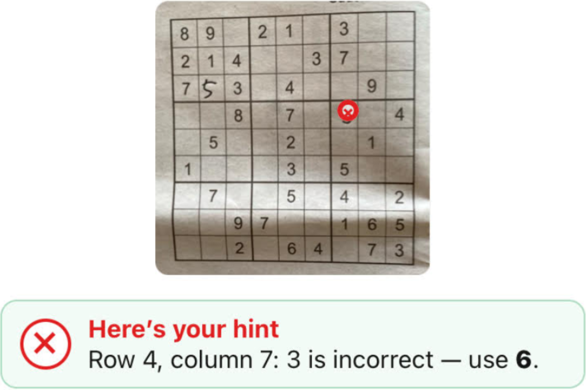

1
Take a photo
Frame the entire Sudoku square, including handwritten entries.
A practical hint app
Sudoku Hint uses AI to read a paper Sudoku, distinguish printed numbers from handwritten entries, identify possible errors and provide one useful hint at a time.

Simple, focused and advertisement-free.
Frame the entire Sudoku square, including handwritten entries.
Use the app to identify likely mistakes or receive the next helpful move.
The app gives one hint at a time rather than solving everything for you.